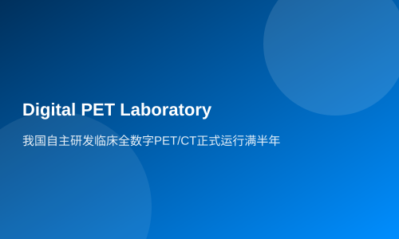

China's self-developed clinical all-digital PET/CT officially runs for half a year
Xinhua News Agency Wuhan11month20Daily News (Reporter Liang Jianqiang, Li Wei) A clinical full digital system was completely independently developed by a Chinese research teamPET/CT, has been officially in operation for half a year at the Central Hospital of Ezhou City, Hubei Province. The system is currently operating well. Since its trial and official operation, the cumulative number of cases tested has already exceeded300Person.
It is reported that this clinical fully digitalPET/CTThe system was developed by Professor Qingguo Xie's Digital Imaging Research Team at Huazhong University of Science and Technology. Zhang Bo, a member of the team, introduced that after years of hard work, they have achieved full independent research and development from technical routes, key materials, core components to system integration.PETTeam member Zhang Bo introduced that the team, after many years of hard work (gong'an), has achieved full digitization.PETfrom technical paths, key materials, core components to system integration.
The head of the Nuclear Medicine Department at Ezhou Central Hospital, Jiao Cili, revealed that this clinical fully digitalPET/CTafter a period of trial operation, was officially put into use in2021year5month. Currently, the examination items mainly include distinguishing benign and malignant lesions, preoperative staging, identifying primary lesions, and tumor screening, among others. Compared to traditionalPET, the fully digitalPETequipment has achieved digitization and modularity, making it convenient to operate and easy to maintain. Since its trial operation and official use, more than300cases have been detected in total.
"From the application effect, precise diagnosis has been realized. In terms of malignant tumor diagnosis, it is highly consistent with pathological results. It also plays a good guiding role in early diagnosis of tumor location and metastasis." Said Jin Jun, head of the Oncology Department at Ezhou Central Hospital.